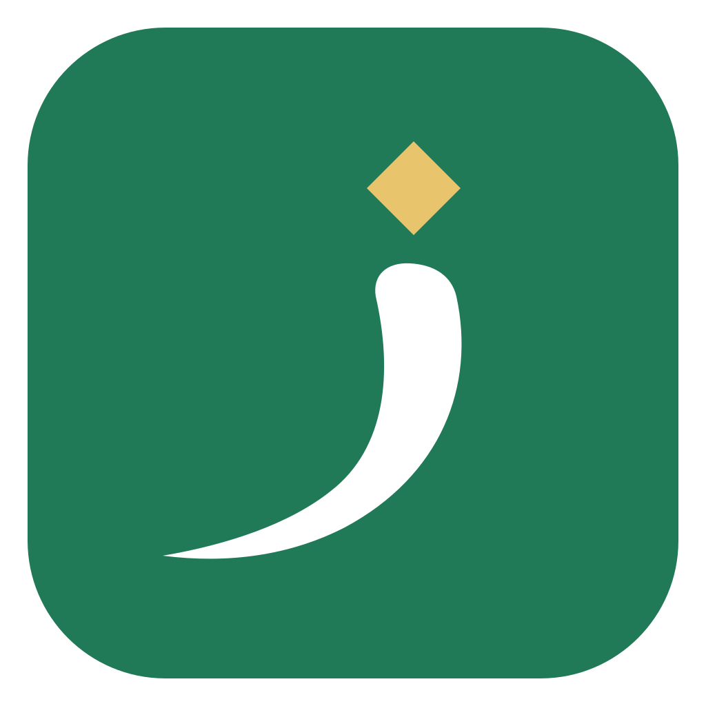
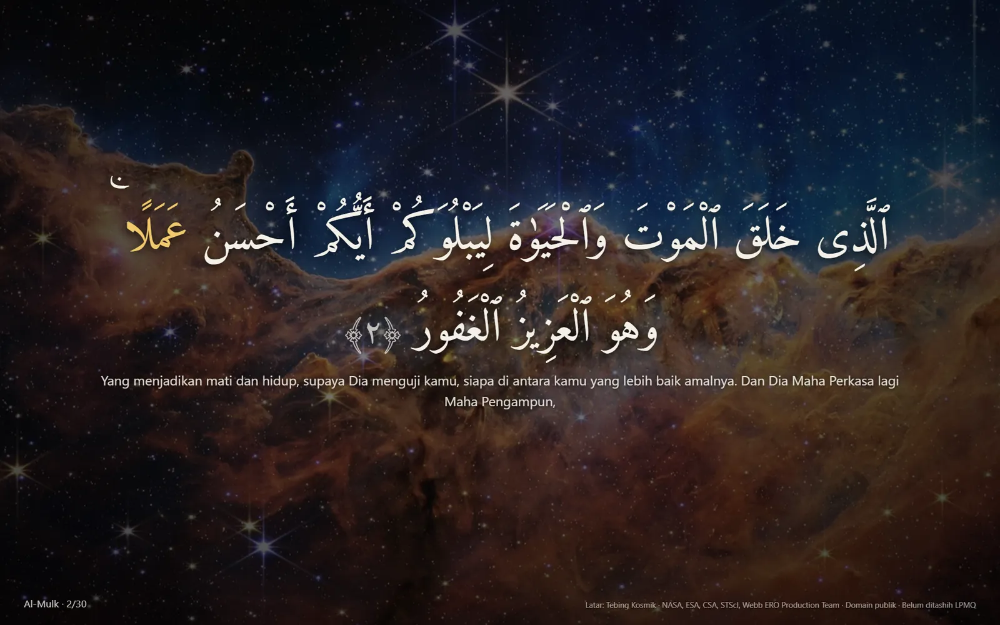
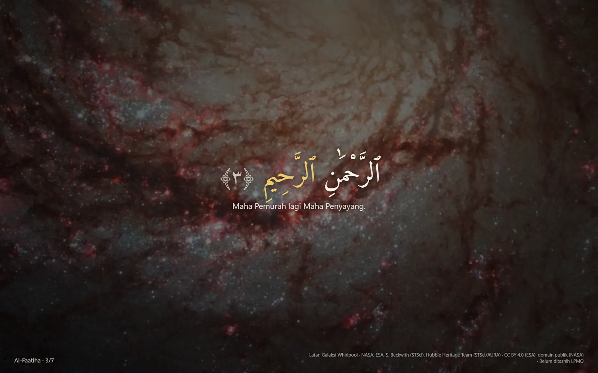
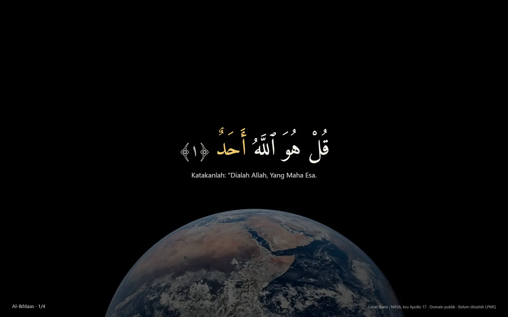

Panel ayat yang melayang
Panel kecil di pojok kanan bawah menampilkan ayat yang sedang dibaca. Tidak mengambil alih keyboard, bisa dibuat tembus klik, dan posisinya diingat di setiap monitor.

ZiyadahGratis · Tanpa iklan · Open source
Murottal menemani jam kerja, ayatnya melayang kecil di sudut layar dan mengikuti bacaan qari kata demi kata. Tidak mencuri fokus, tidak ada iklan, tidak perlu akun.
Panel kecil di pojok kanan bawah menampilkan ayat yang sedang dibaca. Tidak mengambil alih keyboard, bisa dibuat tembus klik, dan posisinya diingat di setiap monitor.
Kata yang sedang dibaca qari ditandai, untuk Alafasy, Al-Husary, Minshawi, dan Abdul Basit.
Ulang ayat, ulang surah, ulang rentang ayat, atau lanjut terus sampai An-Nas.
Teks dan terjemah ada di dalam aplikasi. Audio diunduh saat diputar, lalu tersimpan.
Tanpa akun, tanpa pelacakan, tanpa iklan. Pengaturan Anda tersimpan di komputer Anda sendiri.
Pasang sekali. Setiap ada perbaikan, Ziyadah memberi tahu dan memperbarui dirinya, dengan tanda tangan digital agar hanya pembaruan resmi yang terpasang.
Tekan F11 untuk Mode Layar Penuh: ayat besar dengan terjemah di atas langit yang bergerak pelan. Untuk jeda kerja, tilawah malam, atau disambung ke proyektor di majelis.



Amanah teks
Unduh Ziyadah_…_x64-setup.exe dari tombol di atas.
Bila muncul "Windows protected your PC", klik More info lalu Run anyway. Ini karena installer belum memakai sertifikat tanda tangan berbayar, bukan karena virus.
Pilih surah dan qari, lalu Putar. Pemutaran pertama butuh internet untuk mengunduh audio.